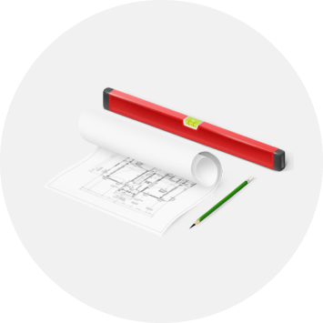

Функции заказчика застройщика
- Оформление земельных отводов на участки строительства и трассы инженерных коммуникаций;
- Организация экологических, топографических и геологических изысканий на земельном участке;
- Сбор технических условий для проектирования;
- Подготовка детального технического задания на проектирование;
- Проведение согласований и экспертиз проектной документации;
- Оформление разрешительной документации для строительства;
- Освобождение и подготовка строительных площадок;
- Обеспечение стройплощадок временными коммуникациями;
- Организация конкурсов по выбору проектных и подрядных организаций;
- Подготовка текстов договоров подряда и разнообразных приложений к ним;
- Организация заказа и поставки специальных материалов и технологического оборудования;
- Подготовка документов для итоговой проверки и сдача объекта в эксплуатацию;

Технический надзор
- Проверка качества проектной документации;
- Контроль за внесением изменений в проектную документацию;
- Выдача рабочих чертежей в производство работ;
- Обеспечение создания геодезической разбивочной основы строительства, передача ее подрядным организациям и контроль за геодезическими работами в процессе строительства;
- Контроль за соответствием выполняемых строительно-монтажных работ проектным решения и условиям договоров подряда;
- Контроль качества применяемых материалов, конструкций и оборудования, проверка наличия документов, подтверждающих их качество;
- Освидетельствование скрытых работ и ответственных конструкций с оформлением актов приемки;
- Проверка правильности и достаточности ведения исполнительной технической документации;
- Освидетельствование технической готовности инженерных систем и оборудования с оформлением актов готовности, испытаний, пуско-наладочных работ;
- Проверка объемов выполненных работ и правильности оформления документов отчетности;
- Взаимодействие с надзорными и административными органами, организация устранения замечаний и контроль за исполнением предписаний;
- Техническая координация действий разных подрядных организаций на стройплощадке;
- Объективный контроль за сроками выполнения работ;
- Сопровождение гарантийного периода после окончания строительства, контроль за устранением выявленных дефектов, подготовка рекламационных актов и претензий подрядным организациям;
Организация управления инвестиционным проектом
- Разработка организационной схемы управления проектом;
- Разработка календарных планов по этапам реализации проекта;
- Разработка сетевых графиков;
- Подготовка данных для составления бизнес-планов;
- Анализ эффективности и экономичности проектных решений;
- Оценка затрат на строительство в целом и по отдельным этапам и видам работ;
- Проверка достоверности расчетов стоимости и смет;
- Строительный и предпроектный консалтинг;
- Изучение документов на земельные участки для строительства, проработка возможностей инженерно-транспортной инфраструктуры, оценка возможных рисков и ограничений при строительстве;
- Участие в переговорах с проектными и строительными организациями с целью обеспечения наиболее выгодных для заказчика условий договоров;